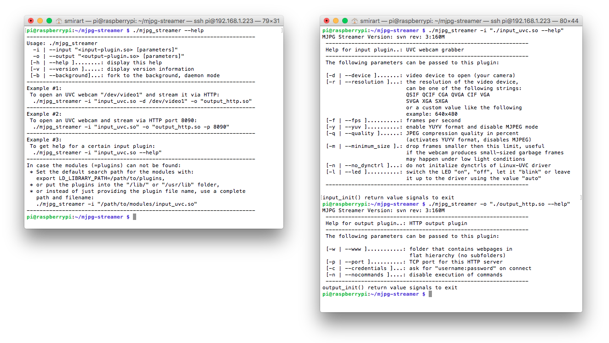

Programming, robotics, traveling
Навигация по серии статей:
Это вторая статья из серии про работу с видео-устройствами на Raspberry Pi. Если в первой статье я делал акцент на физические ограничения компьютера, то в этой я постараюсь описать общие принципы работы с видео-устройствами в плоскости софта. На это меня подтолкнуло собственное непонимание общей картины как стримится видео. И сколько я не читал статей, получалось всё хуже – сколько людей, столько и способов. Потратив кучу времени мне удалось структурировать знания и для того, чтобы моё время было потрачено не зря, а все знания не забылись через год, я и пишу эту статью.
Начать исследование системы на наличие камер и других устройств по работе с аудио-видео устройствами советую с подключенных Video4Linux устройств (подробнее в статье V4L2 Глубокое понимание). Сделать это можно с помощью следующей утилиты – v4l2-ctl.
# Display all information available.
v4l2-ctl --all
# List all v4l devices. If -z was given, then list just the devices of the media device with the bus info string as specified by the -z option.
v4l2-ctl --list-devices
# List available capture formats, you can set device with -d flag
v4l2-ctl --list-formats
v4l2-ctl --list-formats-ext
Также, если камера подключена через USB можно проверить это подключение следующими способами:
lsmod
lsusb
cat /sys/kernel/debug/usb/devices
Для проверки как в системе опрделилось устройство можно воспользоваться утилитой udevadm. Пример вывода Raspicam V1.2:
pi@theimage-6786:~ $ udevadm info /dev/video0
P: /devices/virtual/video4linux/video0
N: video0
L: 0
E: DEVPATH=/devices/virtual/video4linux/video0
E: DEVNAME=/dev/video0
E: MAJOR=81
E: MINOR=0
E: SUBSYSTEM=video4linux
E: USEC_INITIALIZED=12812306
E: ID_V4L_VERSION=2
E: ID_V4L_PRODUCT=mmal service 16.1
E: ID_V4L_CAPABILITIES=:capture:video_overlay:
E: TAGS=:uaccess:seat:
При перезагрузке и подключении камер той же версии меняется только параметр
USEC_INITIALIZED.
Образы Raspberry Pi OS начиная с версии Bullseye содержат в себе libcamera стэк. Образа до и включительно Buster содержут в себе Raspicam стэк. Причиной отказа от стэка Raspicam стали проприетарные исходники Broadcom GPU, которые не позволяли в полной мере поддерживать его работу (подробнее об этом здесь).
Для старых версий можно собрать
libcameraстэк согласно этой инструкции.
Основная информация касаемо использования libcamera описана в прекрасной документации на raspberrypi.com и её пересказывать не вижу смысла. Однако считаю важным подчеркнуть минусы перехода на новый стэк.
libcamera стэк содержит утилиты libcamera-still и libcamera-vid для замены raspistill и raspivid. Однако в отличии от Raspicam в новом стеке есть лишь небольшая прослойка для общения с Broadcom GPU, и все операции выполняются на ARM-ядрах. Тоесть по-сути эти утилиты кодируют на CPU вместо GPU, что снижает общую производительность и может вызвать большие проблемы на Raspberry Pi 2 и Raspberry Pi Zero где всего одно ядро.libcamera до сих пор не содержит некоторых фич, в первую очередь биндингов для Python (они находятся в разработке).Также небольшим замечанием будет то, что по умолчанию
libcameraне уставлен в ОС, помимо установки нужно еще сконфигурировать выбор используемой камеры.
Немного про использование Raspicam:
Помимо использования Raspicam для аппаратного кодирования с помощью GPU у меня опыта нет. Но в целом для работы с графическим сопроцессором есть два API: MMAL и OpenMAX. Тут нужно сделать пометку что MMAL построено на более низкоуровневом OpenMAX (wikihandbk.com). Собственного опыта работы с этими API у меня нет, поэтому ниже будет просто много ссылок на эту тему:
Аппаратное кодирование с gstreamer:
Помимо raspistill, libcamera-still (которые работают с камерой подключенной с помощью CSI-интерфейса) для захвата одиночных изображений Raspberry Foundation предлагает использовать fswebcam.
fswebcam – консольное приложение, используемое для создания одиночных изображений c веб-камеры. Оно захватывает ряд кадров с V4L или V4L2 совместимого устройства, усредняет их для уменьшения шума и рисует на них детали с помощью графической библиотеки (LibGD), которая также выполняет сжатие изображения в PNG, JPEG или WEBP.
# Capture one frame
fswebcam /dev/video0 image.jpg
# Get additional info
fswebcam -d v4l2:/dev/video0 -i 0 --list-controls
Дополнительную информацию по использованию fswebcam вы можете найти ниже:
Для того, чтобы записать видеоролик, нужно в разрешенном для видео-устройства формате (сжатии) считать данные из интерфейса. При необходимости, сконвертировать данный поток в нужный формат и записать на диск. Одним из самых известных инструментов для этой задачи является ffmpeg.
# List device capabilities
ffmpeg -f v4l2 -list_formats all -i /dev/video0
# Record
ffmpeg -f v4l2 -framerate 25 -video_size 640x480 -i /dev/video0 output.mkv
# Converting
ffmpeg -i input.mp4 output.avi
Немного ссылок по работе с ним:
Для начала думаю важно описать что такое стрим видео. Я представляю себе этот процесс как конвеер, пройдёмся по нему:
RTSP/RTP, Adobe RTMP, WebRTC, FTL, SRT, MPEG-DASH, Apple HLS, LL-HLS можно найти на restream.io, wowza.com.При выборе протокола для стрима большое значение имеет поддерживаемый протоколом кодек. Кодек – это алгоритм сжатия видео. Можно выделить два основных вида сжатия: покадровое сжатие и межкадровое сжатие. Подробнее про кодеки:
Реализацией метода покадрового сжатия является Motion JPEG (MJPEG) (wiki). Основной особенностью которого является сжатие каждого отдельного кадра видеопотока с помощью алгоритма сжатия изображений JPEG. Этот метод широко применяется в некритичных к задержкам задачах, например в видеонаблюдении. Плюсами данного метода являются: небольшие потребности в ресурсах вычислителя при кодировании, поддержка отображения данного стрима с помощью всех браузеров без надстроек. Возможность легко добавить веб-сервер для повышения робастности камеры. Реализацией данного метода является mjpg-streamer.
Надо заметить, что в дистрибутивах Raspbian OS (до RaspiOS) утилита raspistill для кодирования изображений с CSI-камеры использовала возможности аппаратного видео-сопроцессора Video Core. И по сути позволяла не использовать для этого ресурсы CPU. Такая возможность была добавлена в mjpg-streamer за счет добавления плагина input_raspicam.

Использование mjpg-streamer:
Для организации стрима двумя видами сжатия в тч с межкадровым нужно использовать другие видеокодеки, например, H.264. Большинство камер сразу отдает видеопоток с сжатием в этом кодеке. А те же утилиты raspivid, libcamera-vid могут выдавать в stdout непосредственно байтовый поток который можно передать по сети используя тот же netcat (nc).
raspivid -t 0 -h 240 -w 320 -fps 30 -hf -b 100000 -o - | nc -l 5001
В libcamera-vid также появился механизм передачи байтового потока по сети:
libcamera-vid -t 0 --inline -o udp://<ip-addr>:<port>
Подробнее здесь на сайте raspberrypi.com.
Аналогичный стрим можно сделать с помощью ffmpeg:
ffmpeg -f v4l2 -s 640x480 -input_format mjpeg -i /dev/video0 -c:v copy -f mjpeg udp://ip:port
Ребята из Singularis Lab переделали mpjg-streamer под передачу H.264 подробнее в статье на хабре.
Подробнее про кодеки для межкадрового сжатия написано в этой статье. Их поддержку камерами нужно проверять. Или, если это необходимо, можно сделать переконвертацию в нужный кодек, используя тот же ffmpeg.
Однако H.264 без обертки не предназначен для передачи по сети. А также большинство плееров не смогут воспроизвести такой поток. Далее рассмотрим проколы для потокового видео.
Для стриминга с помощью ffmpeg нужен веб-сервер. Раньше для стрима с помощью ffmpeg использовался входящий в его пакет ffserver, однако 6 января 2018 года его удалили. Подробнее о как использовать ffserver:
ffserver предлагает два потока: в формате FLV и SWF.
В источниках ниже изложено как использовать ffmpeg с RTMP плагином на nginx:
Тут нужно сделать замечание: RTMP является проприетарным проколом Adobe, который был разработан для работы с Flash Player. И соответственно как и он - протокол устарел.
Также есть интересные ветки для ведения прямой передачи потока на YouTube без использования веб-сервера по RTMP протоколу:
Вместо ffserver на сайте trac.ffmpeg.org предлагают использовать mkvserver_mk2.
Реализация обертки в RTSP прокол посредством VLC.
libcamera-vid -t 0 --inline -o - | cvlc stream://dev/stdin --sout '#rtp{sdp=rtsp://:8554/stream1}' :demux=h264
Подробнее:
Реализация обертки в RTSP прокол посредством gstreamer.
libcamera-vid -t 0 -n --inline -o - | gst-launch-1.0 fdsrc fd=0 ! h264parse ! rtph264pay ! udpsink host=localhost port=5000
Кстати благодаря тому, что libcamera предоставяляет libcamerasrc gstreamer элемент, возможен прямой запуск gstreamer'а.
gst-launch-1.0 libcamerasrc ! capsfilter caps=video/x-raw,width=1280,height=720,format=NV12 ! v4l2convert ! v4l2h264enc extra-controls="controls,repeat_sequence_header=1" ! h264parse ! rtph264pay ! udpsink host=localhost port=5000
Подробнее про использование gstreamer:
avconv. libav.org, andy.od.ua, superuser.comuvc2http habr.com, github.com